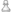
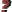
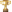
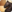

Codici Partita
Un codice indica una qualche caratteristica scacchistica che può essere attivata o meno per ogni partita nel database. Ci sono 21 codici impostabili dall'utente che possono essere applicati ad ogni partita. Questi codici saranno usati principalmente come parte di ricerche complesse nel database, o per filtrare all'interno di liste di partite. Dato che tutti i codici importabili dall'utente non hanno significato, è possibile usarli per ogni uso di cui l'utente ha bisogno.
I codici e i loro simboli nel dettaglio:
-  Apertura Bianco
- Apertura Nero
- Mediogioco
- Finale
- Novità
- Struttura pedonale
- Tattica
- Lato di re
- Lato di donna
- Brillante
-  Svista
- Utente
- Miglior partita
-  Partita decisiva
- Partita modello
- Strategia
- Attacco
- Sacrificio
- Difesa
-  Materiale
- Gioco di pezzi
 Arrocco illegale
Arrocco illegale- Mossa illegale
The last two markers are not user-settable, they will be set automatically if a
game contains illegal castlings or even other illegal moves (for example the king
is moving into check) within the main line. If a game is marked with both only
the marker Mossa illegale will be displayed.
Ci sono anche codici speciali che non sono impostabili dall'utente: il codice di eliminazione,
il codice di cambiamento e il codice di aggiunta recente. Una partita segnata col codice di eliminazione
sarà rimossa appena il database sarà compresso
(⇒ Database switcher:
Compresso). Questo codice rimane dopo la chiusura del database.
Il codice di cambiamento significa che la partita è stata modificata (e salvata), e il codice di aggiunta recente
denota la presenza di una partita recentemente aggiunta al database. Questi ultimi due codici sono tolti appena viene chiuso il database.
Quando si modifica partite dai database di Scid (.si4) Scidb supporta i sei codici speciali definiti dall'utente (1..6). Ma non è raccomandato usare questi codici, perché appariranno problemi insolvibili quando le partite saranno copiate in altri database; neanche il programma Scid può risolvere questi problemi.
Quando si leggono database ChessBase entrambi i codici
Svista strategica e
Svista tattica
saranno mappati al codice comune Svista.
Scidb non distingue tra queste due caratteristiche.